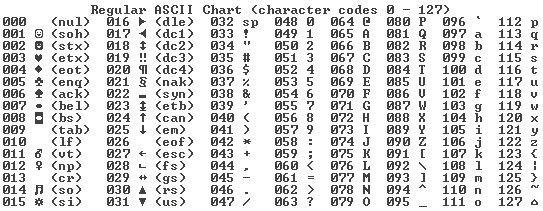

Het binaire stelsel is een getallensysteem dat alleen gebruikmaakt van de cijfers 0 en 1. Dit staat in verbinding met het ‘decimale stelsel' dat wij gebruiken, dus tien cijfers → 0 t/m 9. Het binaire stelsel is cruciaal voor de werking van computers en digitale systemen. Het biedt een eenvoudige manier om informatie op te slaan en te verwerken door gebruik te maken van slechts twee symbolen. Dit vereenvoudigt complexe berekeningen en logische operaties. Het binaire stelsel maakt gebruik van machten van 2, waarbij je altijd begint met tellen vanaf de rechterkant. Bij elke positie kan je de waarden 0 of 1 gebruiken. Wanneer je bijvoorbeeld een 1 plaatst op de eerste plek, betekent dit dat je naar de tweede plek moet gaan om 2 te representeren. Het binaire getal ‘10’ staat voor het decimale getal 2.
Positiewaarden In het binaire stelsel heeft elke positie een waarde die een macht van 2 vertegenwoordigt. De waarde van elke positie van rechts naar links is als volgt: 2⁰ = 1 2¹ = 2 2² = 4 2³ = 8 2⁴ = 16 Enzovoort. Om het beter te begrijpen nemen we een voorbeeld: We nemen het binaire getal 1101 De meest rechtse 1 (2²) is 1. De 0 (2¹) is 0. De tweede 1 (2²) is 4. De meest linkse 1 (2³) is 8. Dus 1101 = 1+0+4+8 = 13 in het decimale stelsel.
Van binair naar decimaal: Tel de waarden van de posities op waar een 1 staat. Bereken welk getal waar staat in het decimale stelsel en daarna de getallen optellen
Van decimaal naar binair: Deel het decimale getal door 2 en noteer het getal dat overblijft. Deel daarna dat getal weer door 2 enzovoort tot er niks overblijft en er dus 0 staat. De binaire waarde wordt gevormd door de resten van onder naar boven te lezen.
Voorbeeld: Om 13 om te zetten naar binair doe je:
13 ÷ 2 = 6, rest 1
6 ÷ 2 = 3, rest 0
3 ÷ 2 = 1, rest 1
1 ÷ 2 = 0, rest 1
Lezen van onder naar boven geeft: 1101.

Een bit is de kleinste eenheid van informatie in een computer en kan alleen 0 of 1 zijn.
Een byte bestaat uit 8 bits. Dit is een standaardmaat voor gegevens in computers.
Het binaire stelsel is cruciaal voor de werking van computers en digitale systemen. Het biedt een eenvoudige manier om informatie op te slaan en te verwerken door gebruik te maken van slechts twee symbolen (0 en 1). Dit vereenvoudigt complexe berekeningen en logische operaties. Computers en Digitale Apparaten: Computers verwerken informatie in binaire vorm. Elke informatie, zoals tekst, afbeeldingen en geluid, wordt uiteindelijk omgezet in een reeks van nullen en enen. Logische Operaties: Binaire logica vormt de basis voor computertalen en algoritmes. Logische operaties zoals EN, OF en NIET worden uitgevoerd op binaire waarden. Gegevensopslag: Gegevens op harde schijven, SSD's en andere opslagmedia worden in binaire vorm opgeslagen. Elk bit vertegenwoordigt een klein stukje informatie.
De computer gebruikt dit stelsel ook om tekst weer te geven. De eerste drie bits van een byte kunnen aangeven of een letter een hoofdletter of kleine letter is, terwijl de overige bits de specifieke letter representeren. Dit heet ASCII. ASCII staat voor American Standard Code for Information Interchange.
ASCII gebruikt 7 bits om 128 verschillende karakters te maken: - hoofdletters (A-Z)→ bij hoofdletters begint de code met 010 - kleine letters (a-z) - speciale tekens ASCII wordt van rechts naar links gelezen. De eerste drie cijfers geven aan of het een hoofdletter of een kleine letter is ( bij het tellen tel je deze cijfers niet mee), daarna geeft elke bit aan welke letter het is. Het alfabet bestaat uit 26 letters. Elke letter heeft een eigen nummer, dit gaat van alfabetische volgorde van 1-26, dus de letter A hoort bij nummer 1 en de letter Z bij de letter 26.
Om het beter te begrijpen nemen we een voorbeeld: We nemen deze code 01001000 01100001 01101100 01101100 01101111
De code begint met 010 dus de eerste letter is een hoofdletter, de rest is een kleine letter, want die beginnen met 011.
01001000: H
01100001: a
01101100: l
01101100: l
01101111: o
01001000 01100001 01101100 01101100 01101111 deze code betekent dus Hallo
